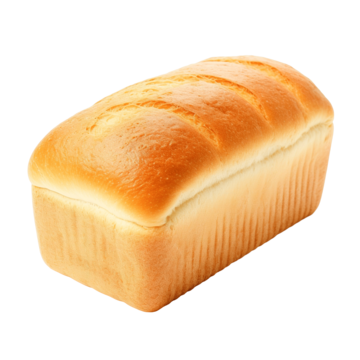

Solutions for common problems with your bread
The most likely cause of a dense loaf is either too much flour or not enough liquid, leading to a dense dough that is heavy and stiff. Hydration amounts vary by recipe, but a typical sandwich loaf calls for around 60-65% hydration. Hydration percentages are calculated by dividing the weight of the water by the weight of the flour in the recipe, then multiplying by 100%. Anything that contains water, like butter or honey, contributes to the total water weight. A recipe with 500 g of water and 1000 g of flour would have 50% hydration, and would produce a very dense dough.
A dense loaf could also be caused by improper kneading. Too little kneading will fail to develop enough gluten to properly trap the carbon dioxide from the yeast, causing the dough to not rise during baking. Too much kneading will overdevelop the gluten, causing it become less elastic and also unable to properly trap the carbon dioxide from the yeast. Overdeveloped gluten is also chewier. Using a stand mixer for too long is a common cause of over kneaded dough.
It could also be that your loaf is not rising
Healthy yeast need food, time, and warmth to create the carbon dioxide that causes dough to rise. Check that your yeast has not expired, and take care to not kill them with water hotter than 115° F (46° C). If in doubt, proof your yeast before adding it to the dough by mixing the amount of yeast, sugar, and warm liquid your recipe calls for together separately, then letting it sit for five to ten minutes. Healthy yeast will begin to foam and bubble. You can then mix the proofed yeast and liquid into your other ingredients. A cold environment can slow or even prevent your dough from rising. Most dough will rise in an hour or two at 70° F (21° C), with dough taking substantially longer at lower temperatures. Too much salt can also inhibit yeast activity in the dough. In general salt should be about 2% of total mass of the flour in a recipe, e.g. a recipe that calls for 500 g of flour should use about 10 g of salt.
While this could be caused by having too much liquid in your recipe, the most likely culprit is not baking your dough long enough. Bread typically requires between 30 and 40 minutes at 350° F (177° C) in the oven, with some breads, like sourdough, taking longer at higher temperatures to develop the crust. However bread continues to bake even after being taken out of the oven. Give your bread at least an hour to finish baking and cool before cutting into it for the best texture. Cutting bread while still hot can cause the steam inside to condense into water rather than be reabsorbed over time, leading to a gummy texture.
Check your baking time and temperature. Over baking is usually the cause of a tough, unpleasantly crunchy crust. Another common cause of tough crust is using high protein 'bread flour' when the recipe calls for all purpose flour. Bread flour has more protein than all purpose flour, which gives breads made with bread flour more structure and tougher crusts. This isn't always ideal though. Check your recipe and only use the flour called for, bread flour isn't for every kind of bread.
If the flour, bake time, and temperature are all correct and the crust is still thicker than what you would like, add steam to the oven early in the baking process to soften the crust. Place an oven-safe pan half full of water on the lowest oven rack while preheating. The water should be boiling or almost boiling when you put the bread in, as the steam will be most effective during the first few minutes of baking.
Bread not browning can have several causes.
The oven isn't hot enough. High temperatures, at least 350° F (177° C), are needed for the Maillard reactions and caramelization that brown bread.
The bake time isn't long enough. Bread generally needs 30 to 40 minutes in the oven to develop a crust and reach the proper internal temperature.
There is too much steam in the oven. Steam can soften crust early in the baking process, but too much steam can prevent the crust from browning. Remove the steam source about 20 minutes into the baking time.
The recipe doesn't have enough sugar. Sugar develops the crust through caramelization and Maillard reactions. Either add more sugar to the recipe or, for recipes that don't call for additional sugar like sourdough, use higher baking temperatures.
The dough has over-proofed. Yeast use sugar to create carbon dioxide, which causes the dough to rise. After too long spent rising the yeast will have consumed much of the sugar in the recipe, leading to not enough sugar left to properly brown the crust. Depending on the room temperature dough will typically need an hour to an hour and a half to rise. Check the dough by gently poking it. The dough has risen sufficiently when it slowly springs back but still leaves a slight indentation.
Rushing the rising time is the most common cause behind a load of bread without much flavor. The fermentation process is what develops bread's taste, and many distinct styles, like sourdough, rely on very long fermentation periods. Ensure you're allowing the bread enough time to properly rise, typically an hour to an hour and a half for each rise for a sandwich loaf, and use the poke test if necessary.
Not having enough salt in the recipe can also cause a flavorless loaf of bread. Salt is very important to bread, both for flavor and for structure, and trying to omit salt will seriously impact the quality of your bread. In general salt should be about 2% of total mass of the flour in a recipe, e.g. a recipe that calls for 500 g of flour should use about 10 g of salt. If you must substitute for salt, with low sodium salt substitute or miso paste for example, consider adding herbs or nutritional yeast to compensate for the lack of flavor.
Proportions of ingredients are the secret to baking. Adding an extra cup of water to a recipe can have a drastic effect on both the techniques required to create a loaf and the crumb of the finished loaf. Not including enough salt can make an otherwise beautiful loaf unappetizing. Scaling a recipe is made much easier through baker’s math, also called baker’s percentage. Understanding proportions is how a baker goes from merely copying a recipe to creating their own.
Weigh your ingredients: Using measurements of volume, like cups, will yield inexact results. A compacted cup of flour weighs much more than one with the flour spooned in!
Flour is the base: all other ingredients are expressed as a percentage of the weight of the flour in the recipe. This means that flour is always listed as 100%.
Add all sources of hydration together: In more complicated recipes ingredients like whole milk (88% water), butter (18% water), or whole eggs (76% water) all provide hydration to the dough and will affect the final texture.
Calculate percentages: All other ingredients are listed as a proportion of the weight of the flour. Percentage = (Weight of Ingredient/Weight of Flour) × 100. A recipe with 600 grams of flour and 12 grams of salt would have (12g/600g) x 100 = 2% salt.
The recipe for this basic loaf of bread, which will make two loaves, expressed using baker’s percentages along with the weight and volume is
| Ingredient | Baker's Percentage | Weight | Volume |
| All Purpose Flour | 100% | 600 g | 5 cups |
| Water | 70% | 420 g | 1.75 cups |
| Salt | 2% | 12 g | 2 teaspoons |
| Active Dry Yeast | 1% | 6 g | 2 teaspoons / 1 packet |
| Granulated Sugar | 2% | 12 g | 1 Tablespoon |
This recipe can be easily scaled using the percentages. For instance, if instead you wanted to make just one loaf you could take 300 g of flour as the base and adjust all of the values from there.
All Purpose flour and 70% hydration will produce an average loaf, with a mostly closed crumb suitable for covering in butter and jam or making sandwiches without being too chewy. The dough will be firm and easy to work with when kneading. The salt and yeast percentages are the same across most bread recipes. The addition of a small amount of sugar will result in a total rise time of about two hours, depending on the room temperature.

I couldn't find anywhere else to put inline formatting and a link, so it's down here. I don't really use italics and bolding often.